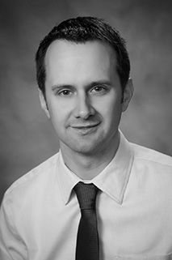

About
Daniel Billard
Daniel is a member in good standing with the Immigration Consultants
of Canada Regulatory Council (I.D # R407887). In addition to a Certificate in Immigration from
Humber College, Ontario, Daniel has an MBA from Dalhousie University in Halifax, Nova Scotia with a
dual major in Finance and International Business. Previous work experience has included owning and
operating a successful construction and property maintenance firm as well as developing residential
and commercial real estate. Previous entrepreneurial activities have been recognized by the Halifax
Chamber of Commerce and with the Goldberg-Schulich award for Entrepreneurship.
In his spare time, Daniel is usually found chasing his kids or outdoors getting dirty!
Sanja Feher
Sanja
is a member in good standing with the Immigration Consultants of Canada Regulatory Council (I.D #
R509385). A native of Croatia, Sanja moved to Halifax, Nova Scotia with her family in August 2011.
Before coming to Canada, Sanja worked as a Croatian customs officer for 20 years. This position gave
Sanja a good understanding of all things immigration related so it was a natural progression to for
her to continue in an immigration related occupation upon arriving in Canada. A fluent Croatian and
English speaker, Sanja is committed to assisting immigrants successfully establish a new life in
Canada.
In her spare time, Sanja is usually spending time with her family, reading or cooking.
Sanja je registrirani Imigracijski Konzultant I član “Immigration Conslutants of Canada Regulatory Council” (I.D # R509385). Rođena u Hrvatskoj, Sanja Feher je preselila u Halifax, Nova Scotia sa obitelji u kolovozu 2011. Prije dolaska u Kanadu, Sanja je radila kao carinski službenik u Ministartstvu Financija, Carinskoj Upravi Republike Hrvatske 20 godina. Iskustvo stečeno na tome radnom mjestu omogučilo joj je dobre temelje za razumijevanje imigracijskih problema, te je bilo posve prirodno za nju da nastavi svoju karijeru na tome polju nakon svog dolaska u Kanadu. Tečno govori Hrvatski i Engleski jezik, te je više nego spremna pomoći imigrantima da uspješno započnu novi život u Kanadi.
U svoje slobodno vrijeme Sanja voli provoditi vrijeme sa svojom obitelji, čitati i kuhati.